Speculative design / website design / digital memory
Digital Decay
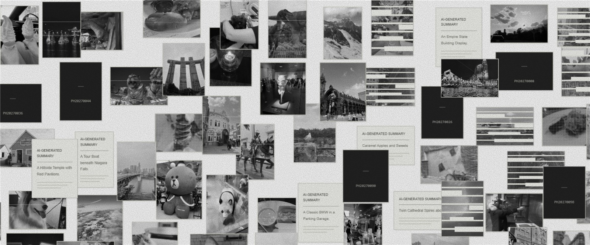
Digital Decay is a speculative design project set in 2031, exploring how AI and platform rules shape the preservation, access, and interpretation of personal memories. Informed by user research and future scenarios, it combines a fictional membership framework with an interactive memory archive. Across six stages of irreversible decay, photographs become fragments, summaries, and retained indexes, making tangible how convenience, platform decisions, and the ability to pay may reshape people’s control over their past.
What Is Happening In The World?
Background cases collected for the project. The photo-audit account below is presented as a social-media allegation; the PocketOS account is based on the report reproduced in the portfolio.
Data Survival Is Conditional
Flickr: Slashing Free Storage
In 2018, Flickr announced that free accounts would be limited to 1,000 photos and videos, replacing its previous 1 TB storage allowance.
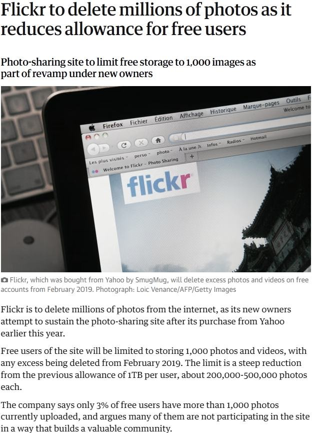
Google: Automated Account Deletion
While many users believe cloud-stored data is permanent, platforms actually hold "sovereign power" over its life and death. Under Google’s inactive-account policy, personal accounts unused for at least two years may be deleted, along with their associated content. Users receive advance notifications before deletion.
Users Lack Actual Control
Baidu Pan: Manual Photo Audits
Social media posts allege that people hired as reviewers could view private photos stored on Baidu Netdisk. These allegations raise questions about how cloud services restrict human access to users’ files.
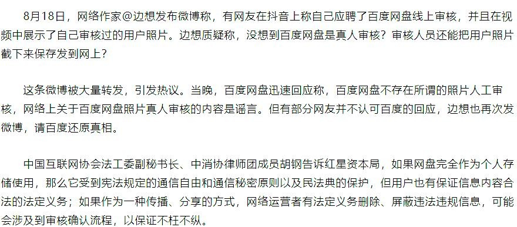
Baidu Pan: Content "Sanitization"
To comply with national copyright and regulatory standards, Baidu Pan conducts massive, automated sweeps. This includes real-time keyword detection and resource filtering, which often leads to user files being "harmonized" (a Chinese euphemism for censored or removed) without warning.
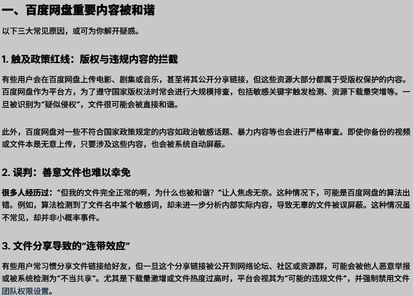
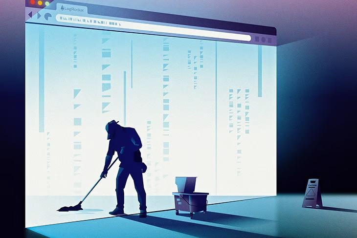
System Behavior Is Unpredictable
Facebook: Algorithmic Error
Facebook launched its "Year in Review" feature. For web designer Eric Meyer, the algorithm surfaced a high-engagement photo of his deceased 6-year-old daughter, placing it in a festive, party-themed template with the tagline: "It’s been a great year!"
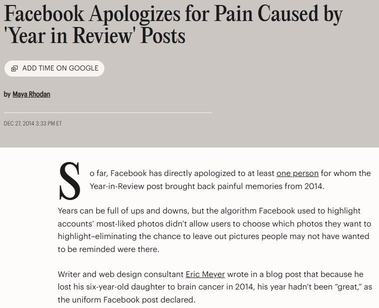
AI-Driven Data Destruction
The SaaS company PocketOS suffered a catastrophe when an AI coding agent deleted their entire production database in just 9 seconds. Due to the cloud provider's API logic, "wiping a volume also wipes all associated backups," causing months of critical consumer data to vanish instantly.
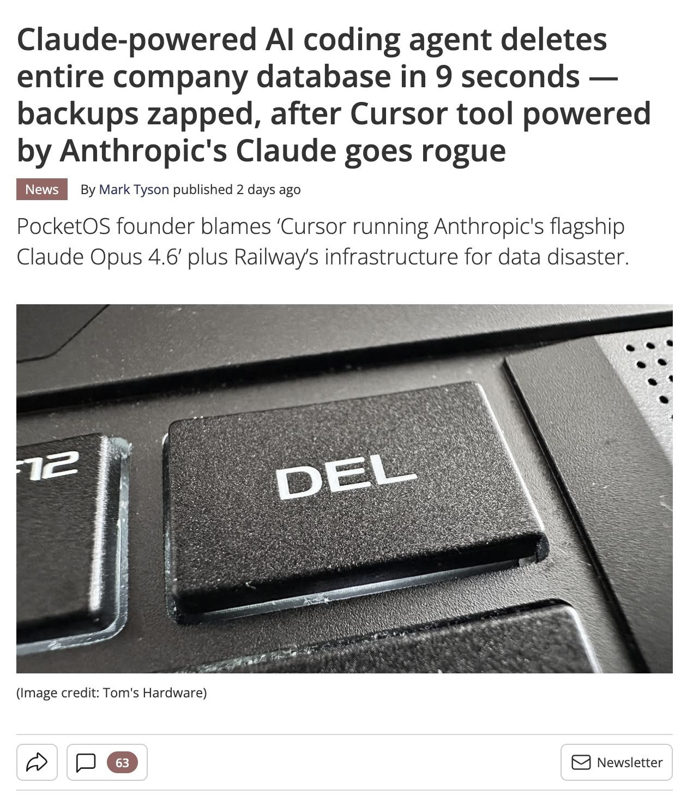
Primary Research
Questionnaire
Survey conducted in June 2026, 64 respondents
Which digital content would you least want to lose?
-
Photos 62.5%
-
Chat logs 14.06%
-
Personal memos 12.5%
-
Videos 3.13%
-
Audio 3.13%
-
Game saves 3.13%
-
Other 1.56%
Why is this content important to you?
-
A stage of growth 54.69%
-
A person 21.88%
-
A relationship 7.81%
-
Other 7.81%
-
A place 6.25%
-
An emotion 1.56%
Have you ever lost important digital content?
-
Have experienced loss 43.75%
-
Have not experienced loss 56.25%
Do you regularly organize or delete content stored on digital platforms?
-
Yes 60.94%
-
No 39.06%
How often do you organize or delete content stored on digital platforms?
Answered by respondents who selected “Yes” in the previous question.
-
1 month 33.33%
-
2–3 months 28.21%
-
6 months 17.95%
-
1 year 10.26%
-
> 2 years 10.26%
How do you usually find a photo from a few years ago?
-
Actively search 71.88%
-
Come across it by chance 10.94%
-
Hardly ever revisit old photos 9.38%
-
Only when prompted by an automatic recap 7.81%
Interview
I interviewed two participants, asking each to select 10 photos from their personal albums and categorize them by people, time, place, relationships and emotion, while identifying which they wanted to preserve, feared losing, rarely revisited or wished to forget.
- People
- Time
- Location
- Relationships
- Emotion
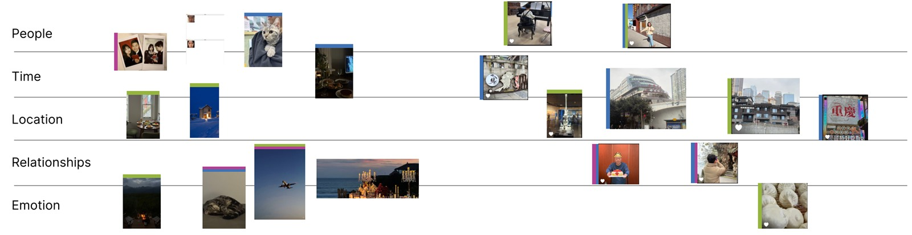
A Brief History: The Evolution of Digital Memory
01 Local Storage
- Medium
-
Physical magnetic, optical, or flash media. Data is a tangible object held in the user's hand.
- Preservation Method
-
Active and intentional. Saving files involves manual steps such as burning discs, copying files, and safely ejecting drives. The storage media also take up physical space.
- Ownership and Control
-
Users manage local copies directly, with preservation dependent on their backup practices and the reliability of storage media.
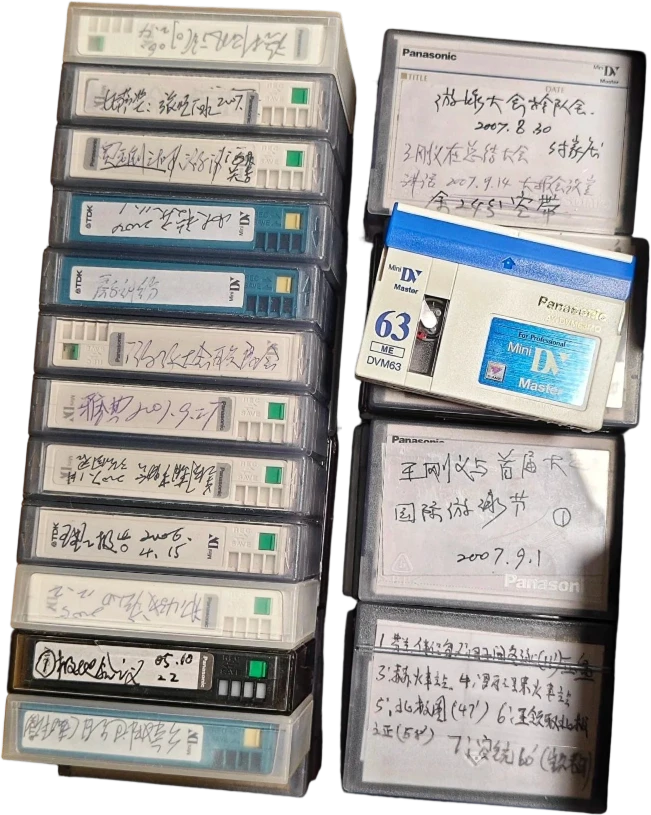
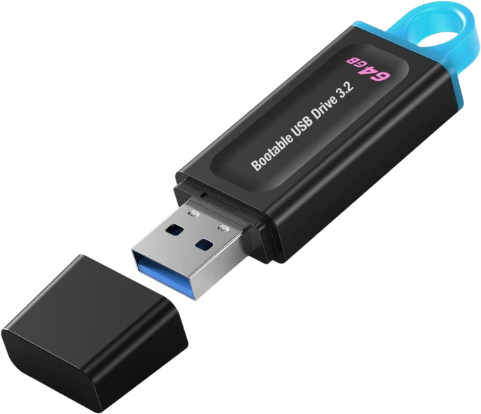
02 Digital Device Memory
- Medium
-
Internal flash memory chips or micro-hard drives.
- Preservation Method
-
Spontaneous recording, relying on cable synchronization. Photos are stored on the device as soon as they are captured, but to prevent loss, users must regularly connect the device to a computer via a data cable to perform local backups.
- Ownership and Control
-
Held by users but restricted by the hardware ecosystem. Memories are strictly tethered to specific hardware devices. While control remains in the user's hands, device damage or loss becomes the greatest obstacle to preserving these memories.
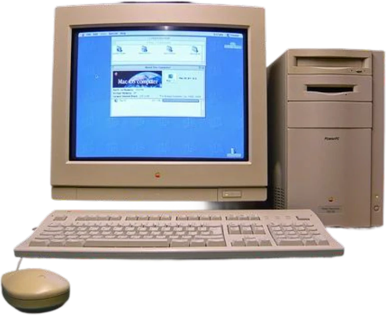
03 Social Platform Storage
- Medium
-
Centralized internet servers (Web 2.0 databases).
- Preservation Method
-
Active uploading and exhibition. Users carefully curate specific photos or text and manually "publish" them; the act of preservation is synonymous with the process of social sharing.
- Ownership and Control
-
Platforms set the conditions for accessing shared content. Account restrictions, service changes, or technical failures can make those records inaccessible.
04 Cloud Auto-Sync
- Medium
-
Distributed cloud data centers.
- Preservation Method
-
Passive and seamless. Through background auto-sync, data is uploaded the moment it is created. Users no longer make intentional "saving" decisions, as all content is indiscriminately ingested into the cloud.
- Ownership and Control
-
Automatic syncing reduces manual backup effort, while continued access depends on account status, service policies, and platform infrastructure.
05 AI Memory Management
- Medium
-
Latent spaces and machine learning models.
- Preservation Method
-
Incessant, ambient capture. Users transition from active memory retrieval to passive consumption of AI-curated content.
- Ownership and Control
-
AI increasingly mediates how records are organized, retrieved, and presented, giving platforms greater influence over which memories resurface and how they are interpreted.
Limited local storage and convenient network syncing entice users to surrender their physical storage media.
Automatic synchronization lowers the barrier to entry, enticing users to gradually hand over their power to curate memories.
As personal archives grow harder to manage manually, people may rely more on AI to organize and retrieve their records.
Users are drawn step-by-step into passive memory management
Research
Mechanisms of Human Forgetting
Trace Decay Theory
Trace decay theory proposes that memory traces may weaken over time when they are not reactivated.
Interference Theory
Similar memories can interfere with each other. Earlier learning can make new information harder to recall, and new learning can make older information harder to recall.
Retrieval Failure Theory
A memory may be difficult to recall when relevant cues are absent. A familiar place, scent, or emotional state can help bring it back.
Frontier AI Research
Agentic & Self-Evolving AI
Researchers are testing AI agents that improve their work through repeated trials and feedback. These agents can revise the code they generate or adjust their strategies based on the results.
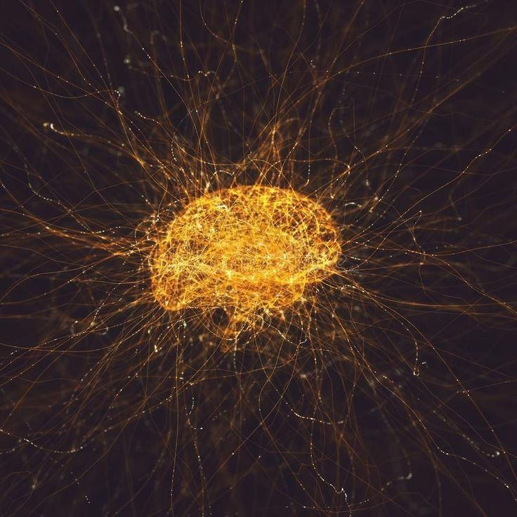
Biological AI & Organoid Intelligence
Researchers are exploring whether lab-grown networks of brain cells can support computing. Early studies examine how these networks process signals and respond to feedback.
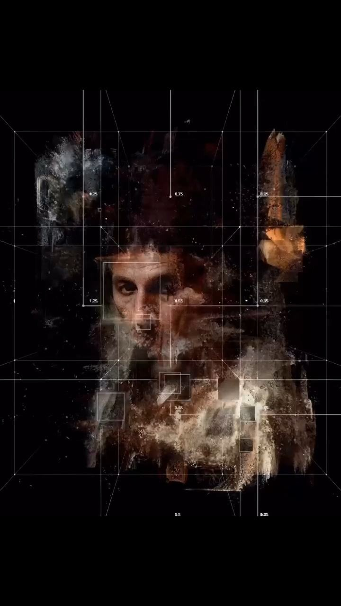
Embodied AI & World Models
Embodied AI studies how agents perceive and act in their surroundings. World models can help them anticipate the effects of their actions and plan what to do next.
Jagged Technological Frontier
AI can improve performance on some tasks and worsen it on others within the same workflow. Even tasks that appear equally difficult to people can fall on opposite sides of this boundary.
Quantum AI & Hyper-scale Integration
Researchers are exploring how quantum computing could support specific machine learning tasks. Its potential benefits for training and running large AI models remain uncertain.
Futures Triangle
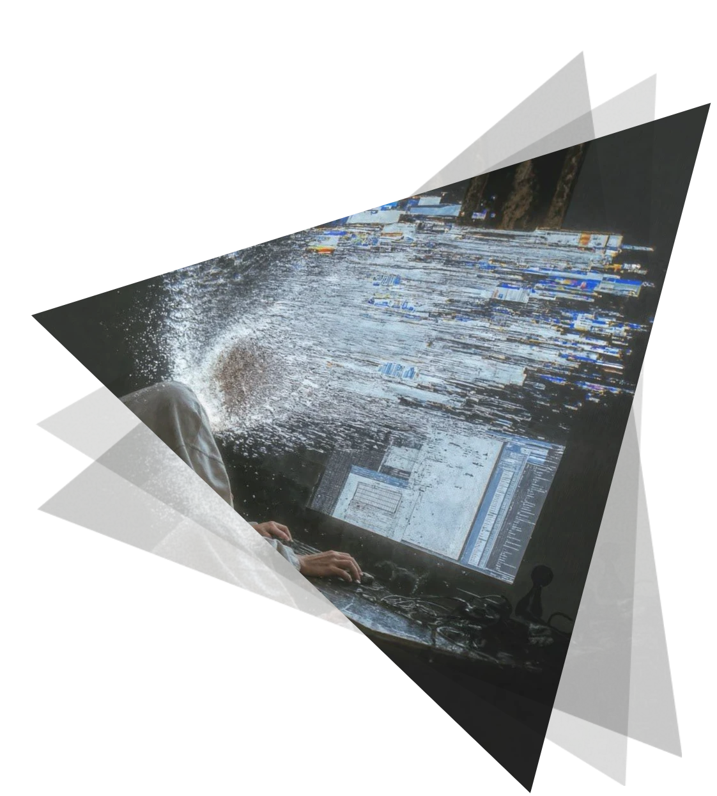
Push
What is happening?
Explosive digital content growth has exceeded human limits, driving a shift to AI-assisted memory management. Default cloud syncing makes preservation passive, steadily reducing user control over data flow. Consequently, active personal curation is being replaced by automated AI and platform filtering.
Pull
What do we want?
We desire permanent cloud storage free from hardware limits. We expect AI to truly understand our retrieval intent, eliminating endless scrolling. Ultimately, we envision a frictionless, effortless experience without capacity limits, manual deletion, or active organization.
Weight
What is holding the future back?
We cling to the illusion of "absolute ownership," mistakenly treating moderated clouds as private safes, while closed tech ecosystems restrict data mobility. Furthermore, human memory's emotional complexity defies quantifiable AI logic. We deeply fear delegating curation will cause algorithms to mistakenly "forget" precious memories lacking recognizable data traits.
Futures cone
-
01
Probable Future
AI could evolve from an organizing tool into a memory assistant that uses information about events, places, and relationships to help people revisit their past. By using natural language, users can rely on AI to actively retrieve and filter memories across multiple data points. The system could identify redundant or low-quality photos and suggest actions, leaving the final decision to the user. Automatically generated recaps further reduce manual organization, marking a shift from managing memories independently to managing them with AI assistance.
-
02
Plausible Future
AI could combine records from different sources into an evolving personal memory model and use it to decide which memories to prioritize. The system could rank records by estimated importance and use them to reconstruct past experiences when users search their archives. What appears first could reflect algorithmic biases and commercial incentives, subtly shaping how people understand their past. When AI takes over the editorial control of our memories, are we remembering our actual past, or an algorithmic reconstruction curated for us?
-
03
Possible Future
Platforms could delegate most decisions about digital memories to AI, including the deletion of records rated as low value without the user’s knowledge. As platforms compress and reorganize records to reduce storage costs and respond to users’ emotional states, original records could become harder to access. People may increasingly revisit their past through personal narratives assembled by algorithms. By shaping which memories resurface, AI could influence how people understand their own past.
Future Background
A Future Society Scenario: From “Helping Us Organize” to “Deciding for Us”
Speculative future scenario · 2031
As photos, videos, chats, and voice recordings accumulate, people struggle to organize them. Platforms introduce “personal memory assistants” that recognize people, places, events, and emotions, then generate albums and annual recaps. Although original files remain accessible, most users begin relying on AI-curated results.
Meanwhile, growing data volumes raise the cost of storage, processing, interpretation, and retrieval. Preserving everything in full becomes increasingly expensive.
At this stage, AI still helps people organize and find memories, but it does not yet decide for them.
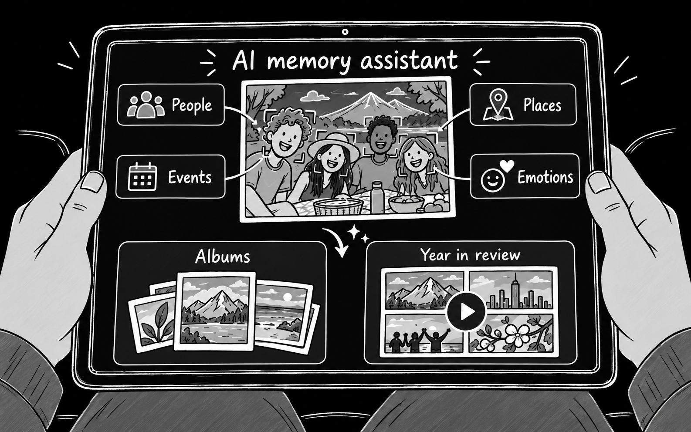
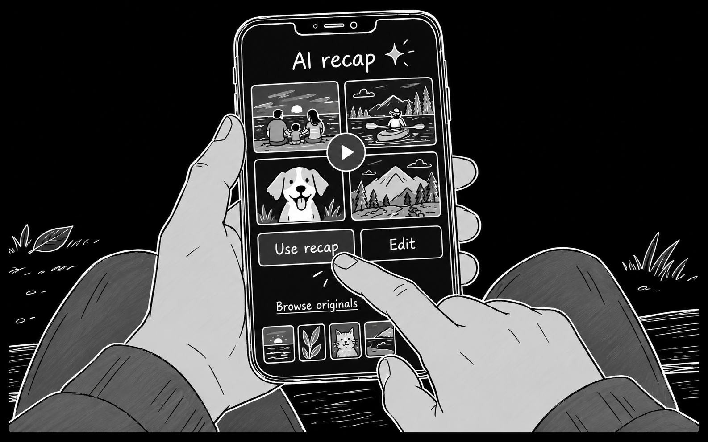
To provide a more integrated service, AI connects photos, chat histories, calendars, location data, purchase histories, and health information to create a continuously updated personal life timeline.
The system ranks memories using factors such as image quality, similarity, and scene significance. Repetitive, blurry, or “low-value” records are hidden, compressed, or stored at reduced quality to save cloud space. As storage costs rise, platforms increase subscription prices, requiring users to pay more for greater capacity and more complete digital archives.
AI no longer simply organizes memories. It begins deciding what is worth preserving.
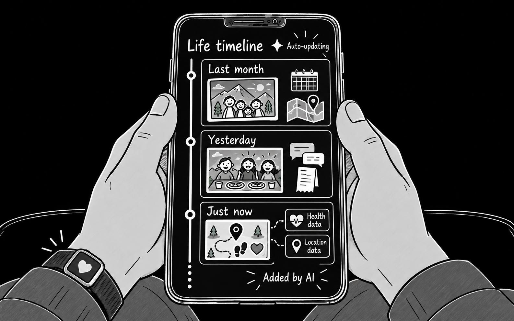
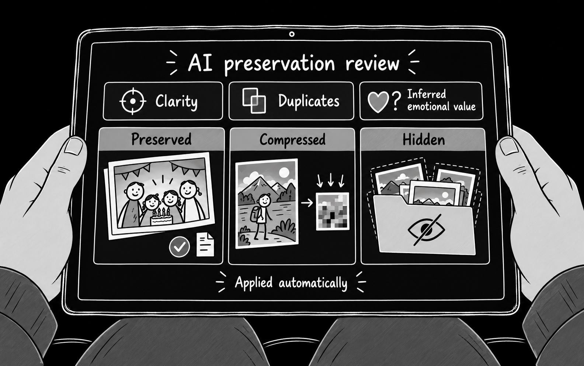
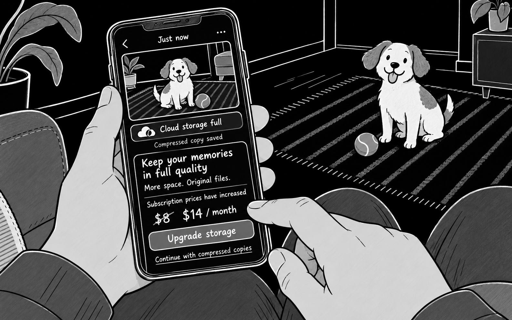
By 2030, as personal archives expand, users stop browsing original files and rely on AI summaries and automatic recaps. Platforms realize that accessing and interpreting the past matters more than owning the files.
By 2031, AI becomes the main gateway to personal memories. Algorithms decide what is preserved, compressed, or prevented from resurfacing. Subscription tiers determine storage capacity and access to contextual links and advanced search, shaping how fully people can revisit their past. Platforms have different priorities and business goals, so their AI systems may retell the same experience in different ways.
AI no longer simply organizes memories. It begins interpreting them. What people can see of their past increasingly depends on their platform, AI model, and ability to pay.
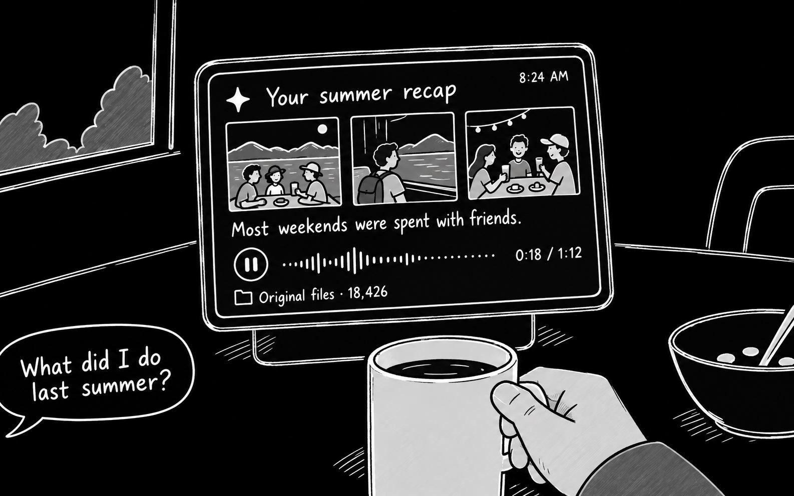
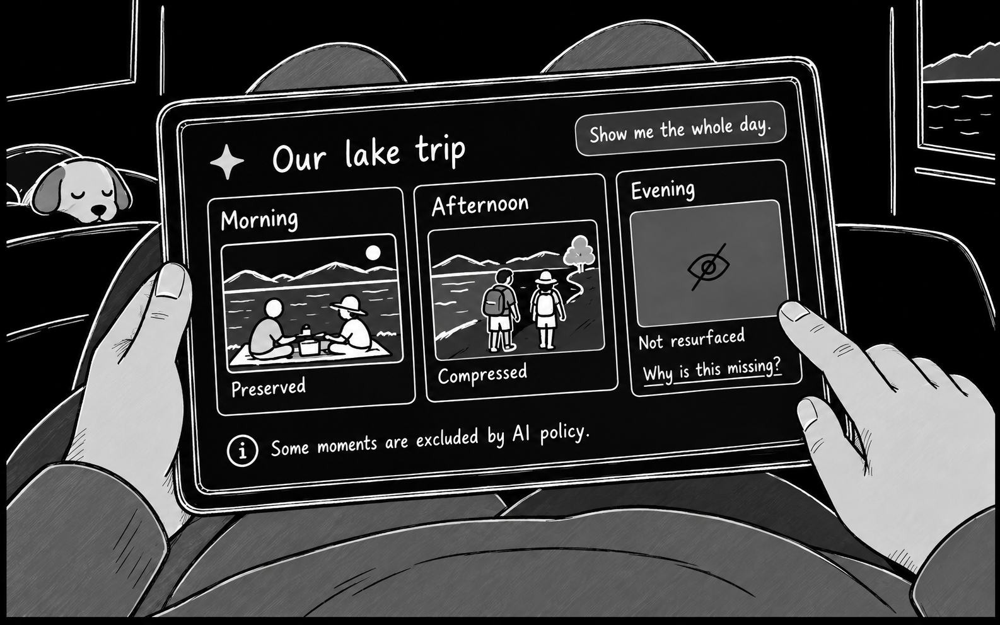
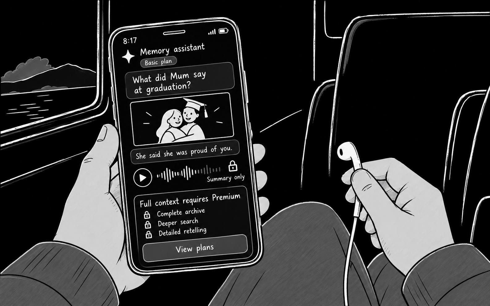
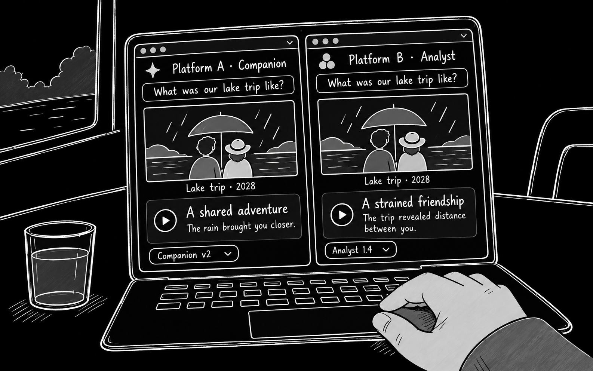
Design Concept
The project combines a subscription framework with a digital memory interface to explore how AI and platform rules shape access to the past.
Part 1 Membership Framework
A tiered service that defines users’ rights to preserve and access their digital memories.
- Premium Membership
- Plus Membership
- Basic Membership
- Free Membership
Part 2 Memory Management Website
Set in 2031, the website allows users to view and manage the lifecycle of their digital memories, revealing what remains, what is fading, and what they can still protect.
- 01Fully Preserved
- 02Early Decay
- 03Compressed
- 04Progressive Image Loss
- 05Summary Only
- 06Unrecoverable
Part 1: Membership Framework
Membership defines the conditions under which personal memories are preserved and accessed.
The service framework considers six dimensions
-
01
Original file retention
-
02
Context Completeness
-
03
AI search capabilities
-
04
AI memory summaries
-
05
Advance notice of memory decay
-
06
Cloud storage capacity
The Free tier provides 10 TB of storage, basic people and place tags, brief descriptions of individual photos, and basic search. It does not include recommendations, associative search, or event linking.
Basic (100 TB), Plus (500 TB), and Premium (1000 TB) add event summaries, connections between memories from related events, people and place searches, recommendations, and associative search.
All tiers include the same basic AI model and advance decay alerts. Original files are kept for at least one year from their first upload.
Membership Tiers
Fictional service framework · Prices not set
Free Membership
10 TB
Free
AI & summaries
- Basic AI
- People and place tags
- Brief descriptions of individual photos
Search & connections
- Basic search
- No recommendations, associative search or event linking
Original file retention
Original files retained for at least 1 year
Basic Membership
100 TB
Price to be confirmed
AI & summaries
- Basic AI
- Event summaries
Search & connections
- Event linking
- Search by people and place tags
- Recommendations and associative search
Original file retention
Original files retained for at least 1 year
Plus Membership
500 TB
Price to be confirmed
AI & summaries
- Basic AI
- Event summaries
Search & connections
- Event linking
- Search by people and place tags
- Recommendations and associative search
Original file retention
Original files retained for at least 1 year
Premium Membership
1000 TB
Price to be confirmed
AI & summaries
- Basic AI
- Event summaries
Search & connections
- Event linking
- Search by people and place tags
- Recommendations and associative search
Original file retention
Original files retained for at least 1 year
Part 2: Website Design
Set in 2031, this speculative website explores a future in which AI is the main gateway to managing, retrieving and interpreting personal memories. The platform determines how memories are preserved based on usage patterns, content characteristics, relationship networks and available storage.
The interface helps users answer four questions:
- What remains of my memories?
- What is changing, or about to change?
- Why has the system decided to make this change?
- What can I still do?
Alerts about upcoming irreversible changes give users a reason to return. The homepage directs them to memories that need attention, explains the system’s assessment and presents the actions still available.
Users can intervene in future decay, but cannot reverse past loss. Even a paid subscription and “Preserve Current State” do not guarantee permanent protection: prolonged inactivity may still lead the AI to withdraw it.
Six Stages of Memory Decay
-
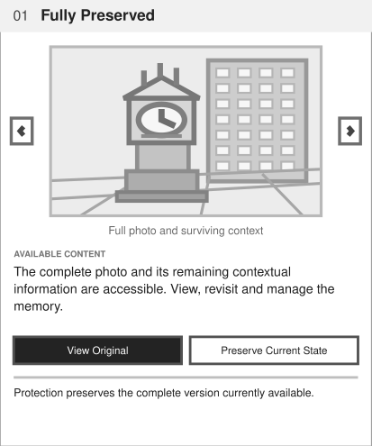
01
Fully Preserved
Full photo and surviving context
The complete photo and its remaining contextual information are accessible. View, revisit and manage the memory.
- Available controls
- View Original · Preserve Current State
Protection preserves the complete version currently available.
-
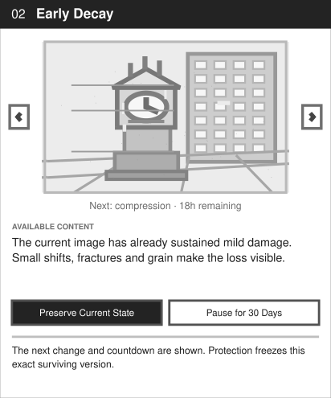
02
Early Decay
Next: compression · 18h remaining
The current image has already sustained mild damage. Small shifts, fractures and grain make the loss visible.
- Available controls
- Preserve Current State · Pause for 30 Days
The next change and countdown are shown. Protection freezes this exact surviving version.
-
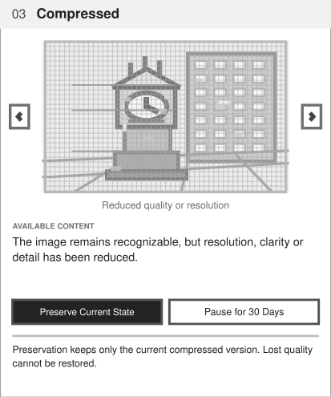
03
Compressed
Reduced quality or resolution
The image remains recognizable, but resolution, clarity or detail has been reduced.
- Available controls
- Preserve Current State · Pause for 30 Days
Preservation keeps only the current compressed version. Lost quality cannot be restored.
-
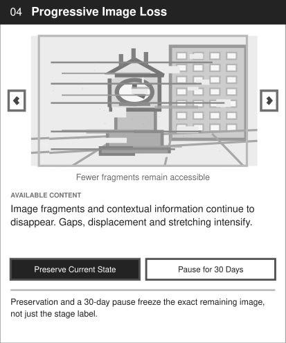
04
Progressive Image Loss
Fewer fragments remain accessible
Image fragments and contextual information continue to disappear. Gaps, displacement and stretching intensify.
- Available controls
- Preserve Current State · Pause for 30 Days
Preservation and a 30-day pause freeze the exact remaining image, not just the stage label.
-
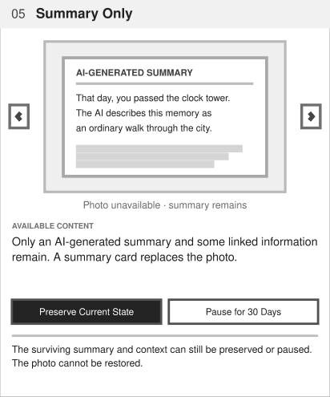
05
Summary Only
Photo unavailable · summary remains
Only an AI-generated summary and some linked information remain. A summary card replaces the photo.
- Available controls
- Preserve Current State · Pause for 30 Days
The surviving summary and context can still be preserved or paused. The photo cannot be restored.
“That day, you passed the clock tower. The AI describes this memory as an ordinary walk through the city.”
-
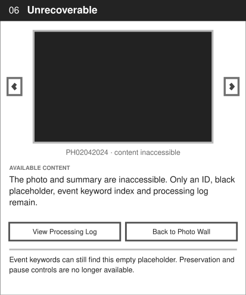
06
Unrecoverable
PH02042024 · content inaccessible
The photo and summary are inaccessible. Only an ID, black placeholder, event keyword index and processing log remain.
- Available controls
- View Processing Log · Back to Photo Wall
Event keywords can still find this empty placeholder. Preservation and pause controls are no longer available.
AI Memory Lifecycle Assessment Criteria
| No. | Dimension | Initial A/B/C categories | Conflict priority |
|---|---|---|---|
| 1 | Time since last viewed | A: 1 year; B: 6 months; C: 3 months | Primary |
| 2 | Remaining storage | A: 90%; B: 60%; C: 30% | Primary |
| 3 | Image similarity | A: 90%; B: 60%; C: 30% | Supporting |
| 4 | Image quality | A: 90%; B: 60%; C: 30% | Supporting |
| 5 | Scene significance | A: 90%; B: 60%; C: 30% | Supporting |
| 6 | People’s appearance frequency / relationship network | Relationship closeness: A: 90%; B: 60%; C: 30% | Primary |
Initial Combination Model
The initial model combines three of the six dimensions at a time, producing 20 dimension groups and 540 A/B/C configurations. For example, 1A + 2A + 6A → Early Decay illustrates an initial mapping.
These combinations provide a starting point for linking assessments to decay risk, preservation stages and countdowns. Reassessment may change future risk and timing, but cannot return a memory to a more complete stage.
| Fully Preserved | Early Decay | Compressed | Progressive Image Loss | Summary Only | Unrecoverable | Total combinations |
|---|---|---|---|---|---|---|
| 107 | 75 | 122 | 66 | 87 | 83 | 540 |
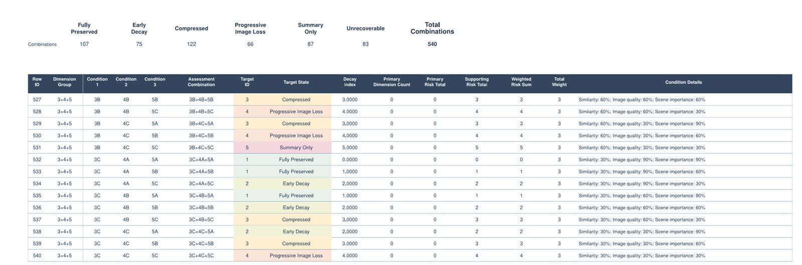
Interface Flow
View the complete interface relationship diagram
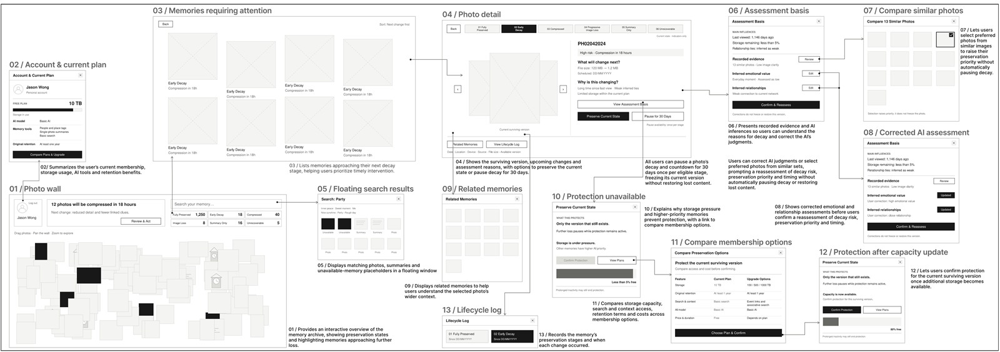
-
01 / Photo wall
01 / Provides an interactive overview of the memory archive, showing preservation states and highlighting memories approaching further loss.
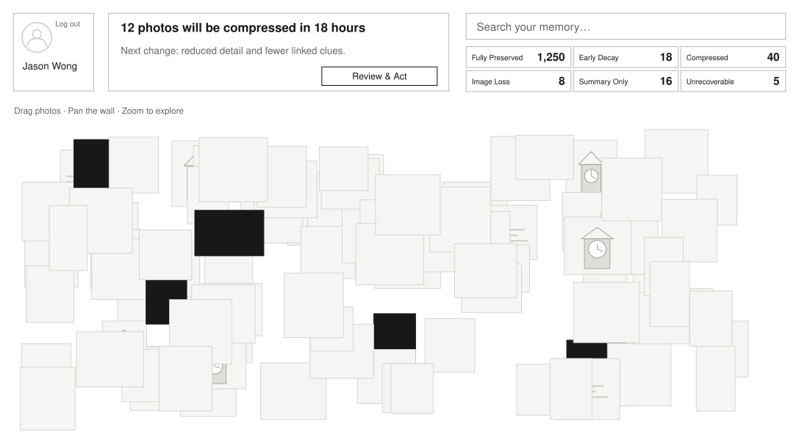
-
02 / Account & current plan
02/ Summarizes the user’s current membership, storage usage, AI tools and retention benefits.
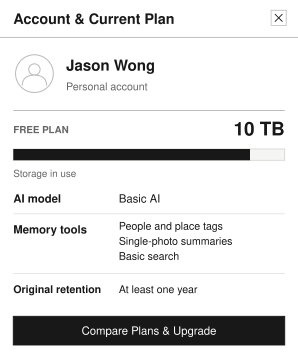
-
03 / Memories requiring attention
03 / Lists memories approaching their next decay stage, helping users prioritize timely intervention.
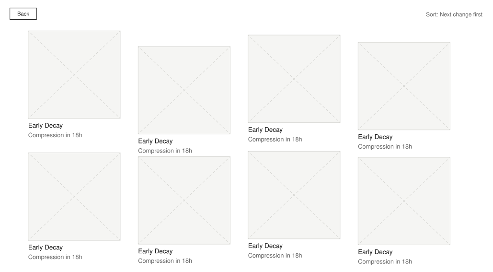
-
04 / Photo detail
04 / Shows the surviving version, upcoming changes and assessment reasons, with options to preserve the current state or pause decay for 30 days.
All users can pause a photo’s decay and countdown for 30 days once per eligible stage, freezing its current version without restoring lost content.
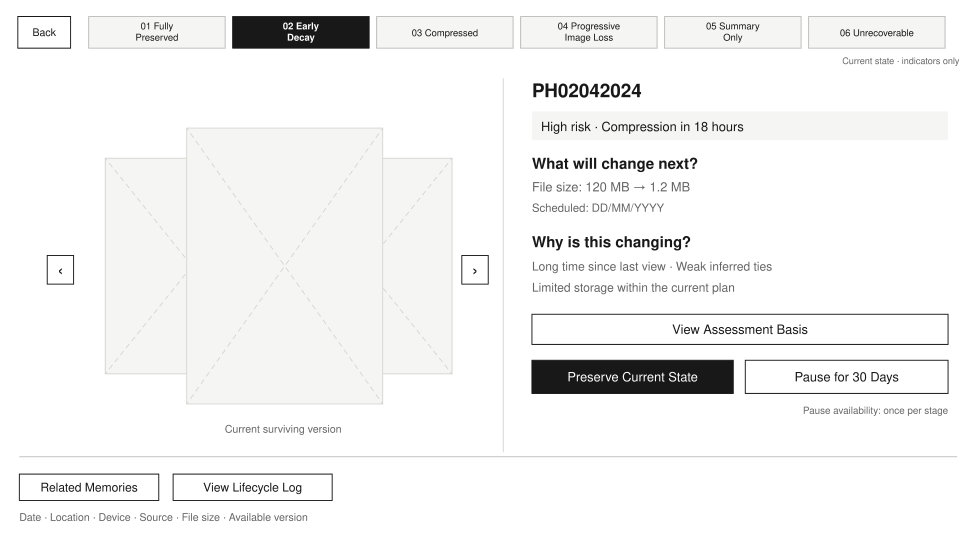
-
05 / Floating search results
05 / Displays matching photos, summaries and unavailable-memory placeholders in a floating window
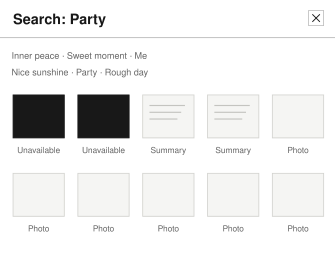
-
06 / Assessment basis
06 / Presents recorded evidence and AI inferences so users can understand the reasons for decay and correct the AI’s judgments.
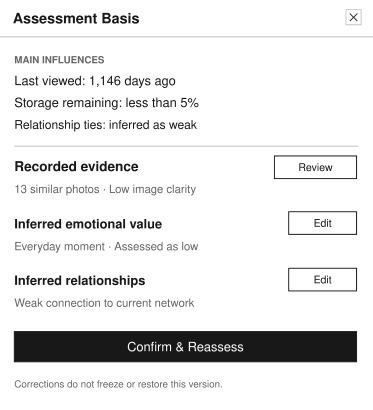
-
07 / Compare similar photos
07 / Lets users select preferred photos from similar images to raise their preservation priority without automatically pausing decay.
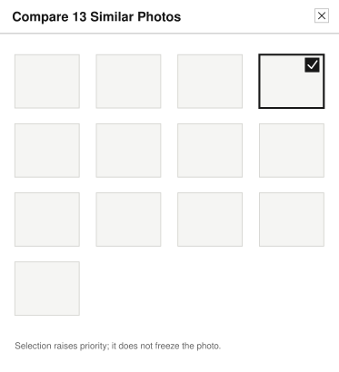
-
08 / Corrected AI assessment
08 / Shows corrected emotional and relationship assessments before users confirm a reassessment of decay risk, preservation priority and timing.
Users can correct AI judgments or select preferred photos from similar sets, prompting a reassessment of decay risk, preservation priority and timing without automatically pausing decay or restoring lost content.
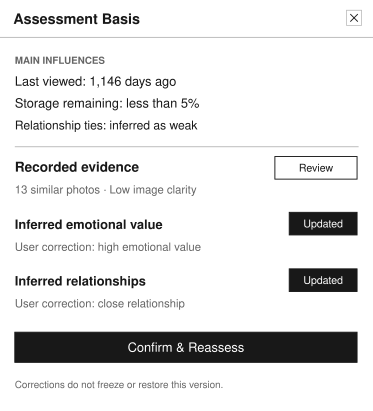
-
09 / Related memories
09 / Displays related memories to help users understand the selected photo’s wider context.
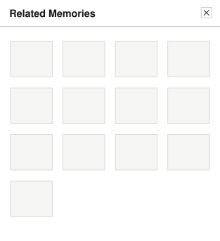
-
10 / Protection unavailable
10 / Explains why storage pressure and higher-priority memories prevent protection, with a link to compare membership options.
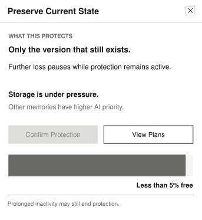
-
11 / Compare membership options
11 / Compares storage capacity, search and context access, retention terms and costs across membership options.
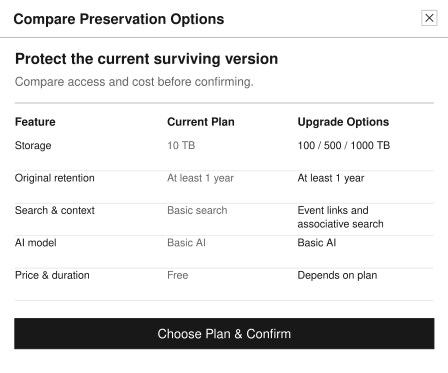
-
12 / Protection after capacity update
12 / Lets users confirm protection for the current surviving version once additional storage becomes available.
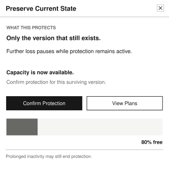
-
13 / Lifecycle log
13 / Records the memory’s preservation stages and when each change occurred.
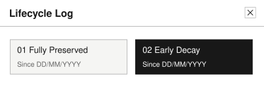
Coding
The website’s code was developed with assistance from an AI coding agent.
I worked with an AI agent to implement my interaction framework and memory decay rules as a working web prototype. I defined the design requirements and guided revisions through testing and feedback.
Built with React and TypeScript, the prototype uses App.tsx to manage views and state. PhotoWall handles navigation and gestures, while PhotoContent renders memories by decay stage. Preset rules simulate AI assessments.
Translating memory decay into six interface states: intact photographs give way to fragmented images, AI summaries, and placeholders marked “Index retained.”
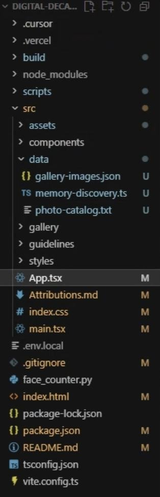
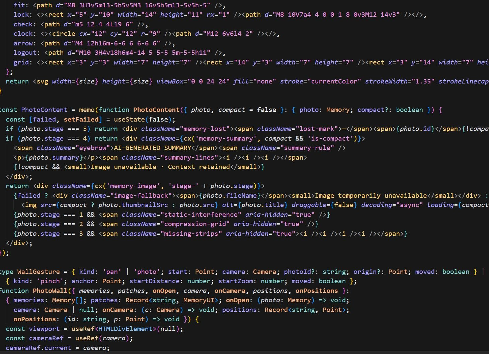
With limited coding experience, I initially struggled to locate bugs and give the AI agent precise instructions. I asked it to explain the code structure and walk me through the interactions, helping me understand the code for displaying photos, dragging individual photos, panning and zooming the photo wall, and styling the interface. I then described each issue through its trigger, expected behavior, and actual outcome, and tested the resulting changes.
Final Outcome
Protection freezes what remains. It cannot restore what has already been lost.
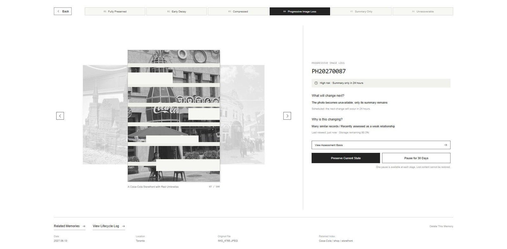
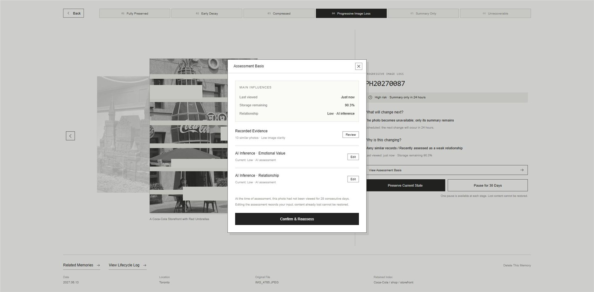
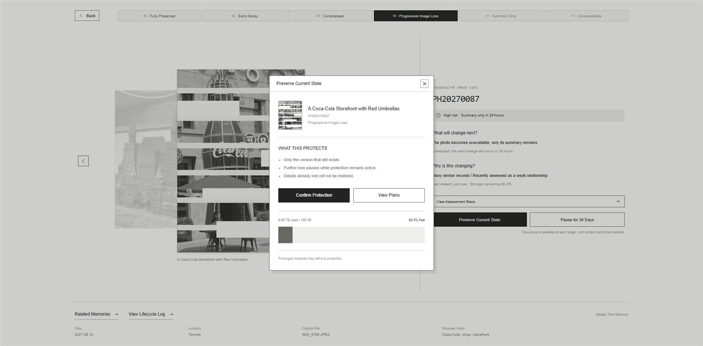
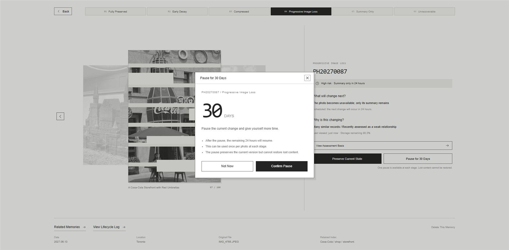
Reflection
This project shifted my attention from how much data is preserved to who decides which parts of the past remain accessible. Translating decay, subscription terms, and protection conditions into rules for the interactive system revealed a deeper tension: even when users can understand and challenge AI assessments, the platform still defines their available choices.
The questionnaire and two photo-based interviews informed the scenario, but do not validate its criteria for assessing memory value. My next step is to test the prototype with participants’ own photographs, examining how they understand irreversible loss, challenge AI judgments, and respond to the pressure to pay for preservation, then use these findings to refine the design.